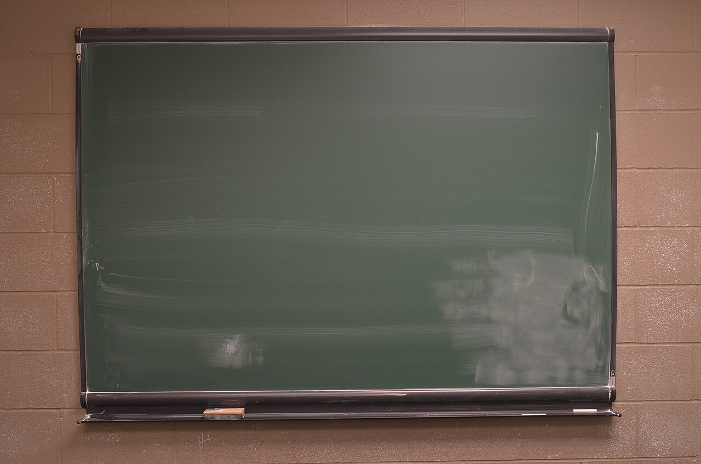
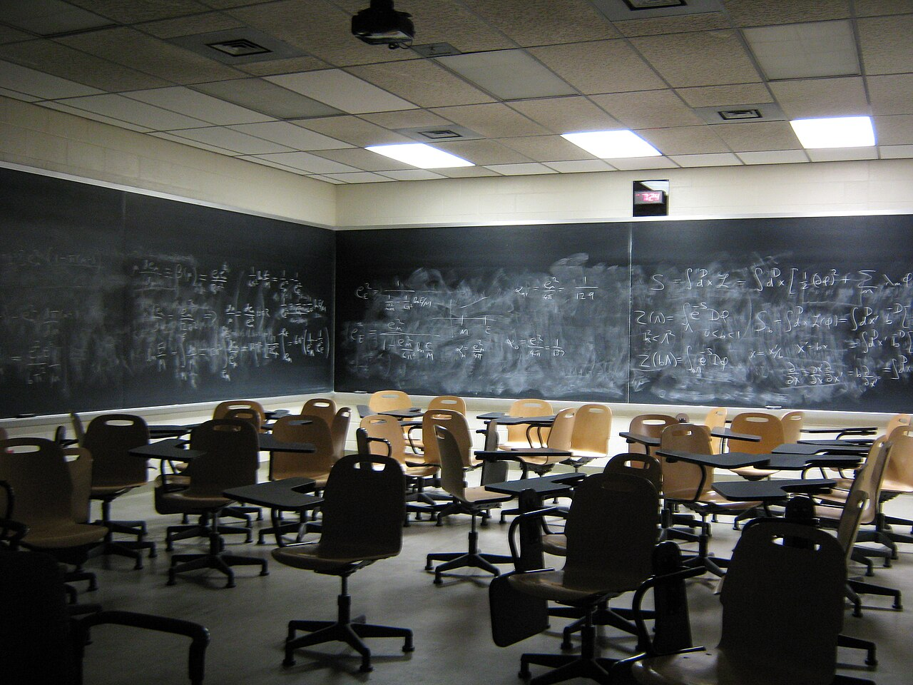
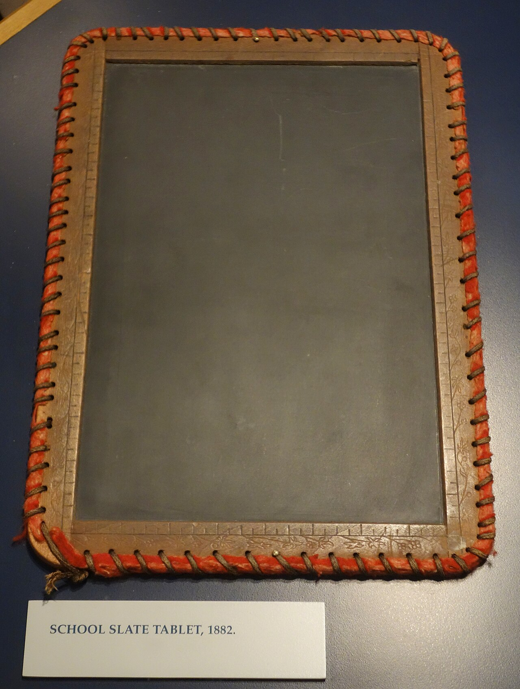
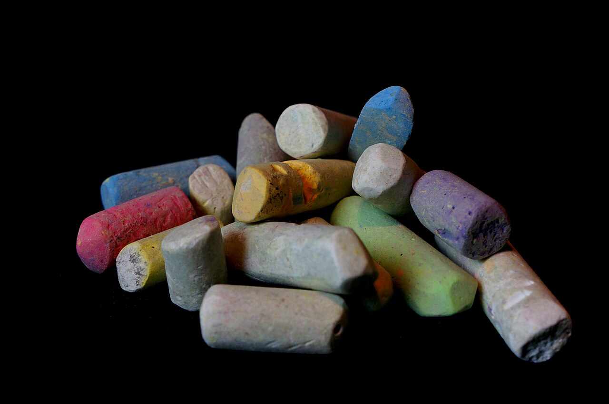
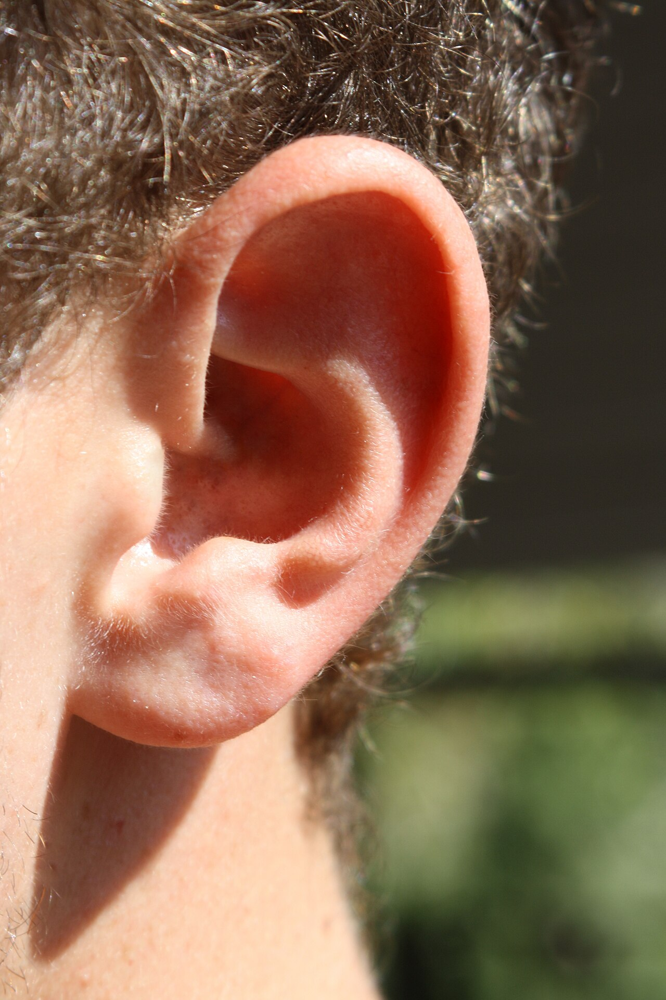
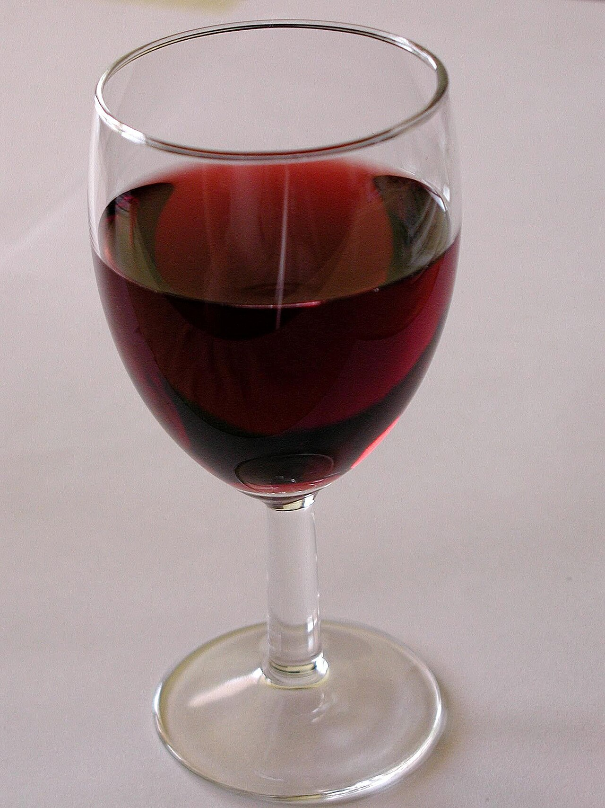
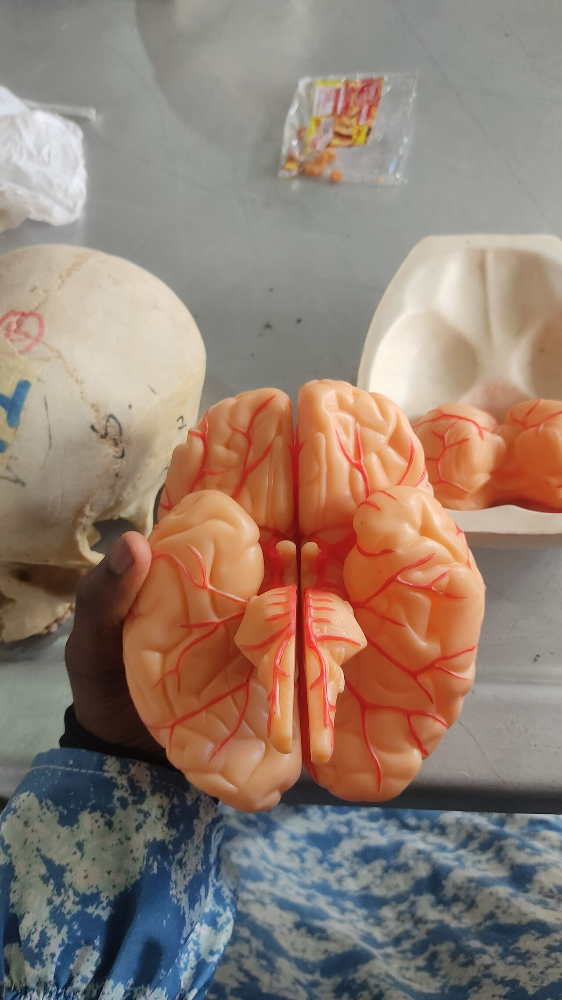
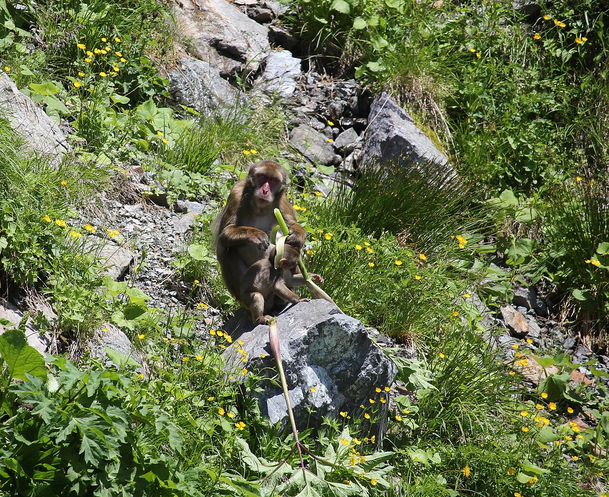

人間・心理 Human & Mind黒板をひっかく音は、 なぜゾッとする？ 黒板をキーッとひっかく音は、思い出すだけで背中がゾクッとします。いやさを生む音の高さを模式図で、耳から脳へ信号が行き来する道すじを流れ図で、いちばん嫌われた音のランキングを順位表で見ていきます。あなたの苦手なあの音は、何位でしょう？
2026.11.02 UP 約5分で読める 文：SOMOSOMO編集部
写真：BlankChalkboard／Raysonho（2014年、CC0）
アメリカ・イリノイ州、1980年代のなかば。ノースウェスタン大学の研究室で、24人の大人がヘッドホンをつけ、16種類の音を聞きました。1つ聞くたびに、「心地よい」から「不快」まで引いた長さ15cmの線に、印をつけていきます。
流れる水、鳴るキー、鉛筆削り、ミキサーのモーター。いちばん不快と答えられたのは、園芸用の三つ又の熊手（くまで）で、黒板と同じ石の板をゆっくりひっかいた音でした。爪で黒板をひっかく音に、いやになるほど似ていたといいます。
だれもが顔をしかめる、あの音。いったい何が、私たちをゾッとさせるのでしょうか。
In a word
耳が強める中くらいに高い音 を、脳が不快に感じるから。

黒板とチョークの、なじみの風景 アメリカの大学の教室です（写真はイメージです）。黒板の数式は、チョークを押しつけて書かれています。書くときに角度が悪いと、チョークは「キーッ」ときしみます。写真：Blackboards – UNM Astrophysics ／Anthony J. Bentley（2011年、パブリックドメイン）
01
Not the Highest Notes
犯人は、 「キーッ」という いちばん高い音 ではなかった
冒頭の実験をしたのは、心理学者のリン・ハルパーン、ランドルフ・ブレイク、ジェームズ・ヒレンブランドの3人です。いやな音の正体は「高い音」だと、だれもが思っていました。ところが、3人の知るかぎり、それを実際に確かめた研究はありませんでした。
3人は、熊手の音をコンピューターに取りこみ、音の高さごとに削れるようにしました。音の高さは「周波数」で表します。空気が1秒間に何回ふるえるかの数で、単位はHz（ヘルツ）。数が大きいほど高い音です。
まず、高いほうの音を削っていきました。3,000Hz より上をすべて取り除いても、いやさは変わりません。次に、低いほうから削っていくと、音はだんだん気にならなくなりました。どの音も、全体の強さはそろえてあります。


黒板の石と、チョーク 左は、1882年にアメリカの学校で使われた石の書き板（スレート）。昔の黒板も、この石の板でした。実験では、熊手でこの種類の石をひっかきました。右は色とりどりのチョークです。写真：左 Slate tablet for school, 1882 ／Daderot（2013年、CC0）、右 Multicoloured chalk ／Pixelmaniac pictures（2014年、CC0）
音の大きさの感じ方が変わったせいではないことも、別の12人で確かめました。さらに、音の強さの細かな揺れを消しても、いやさはほとんど変わりませんでした。決め手は、どの高さの音がふくまれているか、だったのです。
3人は1986年、「人に聞こえる音のうち、真ん中あたりの高さがいやさを生む」とまとめました。高い音は、いやさに必要でも十分でもない。常識とも、自分たちの予想とも逆の結果でした。この研究は2006年、「人を笑わせ、考えさせる研究」に贈られるイグ・ノーベル賞を受けています。
02
The Ear Canal
耳の穴は、 ちょうどその高さを 強める形をしている
2011年には、オーストリアのウィーン大学のクリストフ・ロイターと、ドイツ・ケルンの大学のミヒャエル・エーラーが、この謎にもう一度挑みました。いくつもの候補から、いちばん不快とされた2つの音を選びます。爪で黒板をひっかく音と、チョークが石の板の上できしむ音です。
音の高さを1つずつ弱めて聞かせると、2,000〜4,000Hz の帯を弱めたときに、音はぐっと気にならなくなりました。ピアノでいえば、右はしのいちばん高い1オクターブあたり。「キーッ」の中でも、耳の痛くなるような最も高い部分より、少し下の高さです。
Fig.01 いやさが強いのは、 中くらいに高い音 （模式図）
2,000〜4,000Hz
不快さ（模式）
20
200
2,000
20,000Hz
← 低い音
高い音 →
話し声の基本の高さ
ピアノの最高音（約4,186Hz）
見どころは、灰色の帯に重なる赤い山。いちばん高い音ではなく、ピアノの最高音のすぐ下あたりがいちばん不快です。帯は Reuter と Oehler（2011年）の結果で、曲線の形は模式です。
なぜこの高さなのか。2人は、耳の形に理由を求めました。耳の入り口から鼓膜までの細い通り道を「外耳道（がいじどう）」といいます。この通り道は、形と長さのせいで、ちょうど2,000〜5,000Hz あたりの音を強めてしまうのです。
つまり、この高さは、人の耳がもともといちばん敏感に聞きとる高さです。大事な音を聞き逃さないための耳のつくりが、黒板の音では裏目に出ているともいえます。

この奥の細い通り道が、音を強める 人の耳を間近から写した写真です（写真はイメージです）。耳のくぼみの奥の穴から、鼓膜まで続く通り道が外耳道。中くらいに高い音は、ここで強められてから鼓膜に届きます。写真：Closeup of a human ear ／אנדר-ויק（2009年、パブリックドメイン）
2人は、音を聞いている人の心拍数・血圧と、皮膚の電気の通りやすさも測りました。皮膚は、汗でわずかにしめると電気を通しやすくなります。不快と答えられた音ほど、皮膚の値は大きく変わりました。いやさは気分だけでなく、体にも表れていたのです。
音の中身を分けて調べると、ほかのこともわかりました。「ギー」という音程のある部分を取り除くと、ずっと楽になります。ザラザラした雑音の部分を除いても、いやさは変わりませんでした。
03
Brain Talk
脳の中で、 「感情の係」が 耳の係に口を出す
耳から入った音は、脳の中でどう扱われるのでしょう。2012年、イギリスのニューカッスル大学とユニバーシティ・カレッジ・ロンドン（UCL）のスクビンダー・クマールらは、13人の脳を fMRI（血の流れの変化から、脳の活動を画像にする装置）で調べました。
参加者は、74種類の音を2秒ずつ聞き、不快さを1〜5の数字で答えます。注目したのは2つの場所です。耳からの信号を受けて音を聞きわける「聴覚野（ちょうかくや）」と、脳の奥にあるアーモンドほどの大きさの「扁桃体（へんとうたい）」。扁桃体は、こわさや不安など、感情の動きにかかわる場所です。
Fig.02 いやな音が、脳の中を行き来する道すじ
EAR 耳の穴で強められる 外耳道が、2,000〜5,000Hz あたりの音を強めて鼓膜に送る CORTEX 聴覚野が音を聞きわける どんな高さの音が、どう混ざっているかを分析する FORWARD 聴覚野から扁桃体へ 音の特徴が、聴覚野から扁桃体への流れを変える BACK 扁桃体から聴覚野へ 「どれだけ不快か」が、扁桃体から聴覚野へ戻る流れを変える RESULT 体が身構える 皮膚の汗など、体にも反応が表れる
見どころは、FORWARD と BACK の2段。信号は耳から感情へ一方通行ではなく、扁桃体から聴覚野へも戻っています。出典：Kumar ほか、2012年／Reuter・Oehler、2011年
不快な音ほど、扁桃体と聴覚野の活動は強くなりました。音はまず聴覚野で処理され、そこから扁桃体へ伝わります。おもしろいのは、その逆向きの流れです。扁桃体から聴覚野へ戻る信号の強さは、本人が感じた不快さに応じて変わっていました。
大学の発表は、これを「感情の係である扁桃体が、事実上の主導権をにぎり、聴覚の係のはたらきを変えている」と表現しています。クマールは「何かとても原始的なものがはたらいているようだ」と話しました。


グラスの音も、脳の中の声も 左はワイングラス。フォークでこすった音は、ランキングの2位でした。右は脳の模型です。扁桃体は、この表面からは見えない左右の奥深くに1つずつあります（どちらも写真はイメージです）。写真：左 Glass wine on table ／Paolo Neo（撮影年不明、パブリックドメイン）、右 The Human Brain Model 02 ／Edeh Sophia（2023年、CC0）
大学の発表では、研究で使った音のうち、とくに不快だった音と、そうでなかった音の順位も紹介されました。上位にずらりと並んだのは、かたい物どうしをこする音です。
Fig.03 いちばん不快な音 ベスト10
かたい物どうしを、こする・ひっかく音
1
2
3
4
5
6
7
8
9
10
ナイフで、びんをこする
フォークで、グラスをこする
黒板に、チョーク
定規で、びんをこする
黒板を、爪でひっかく
女性の悲鳴
グラインダー（金属を削る電動工具）
自転車のブレーキのきしみ
赤ちゃんの泣き声
電動ドリル
不快さがいちばん小さかった音
拍手・赤ちゃんの笑い声・雷・流れる水
見どころは、赤い字の上位5つ。すべて、かたい物どうしがこすれる音です。黒板の音は3位と5位に入りました。出典：ニューカッスル大学の発表（2012年10月）
04
Why Did We Evolve This?
サルの警戒の声に 似ている？ 答えはまだ出ていない
では、なぜ人はこの音をこれほど嫌うのでしょう。1986年の論文で、ハルパーンらは1つの仮説をあげました。黒板の音の周波数を図にすると、マカク（ニホンザルの仲間）が危険を知らせる「警戒の声」の図に、とてもよく似ているというのです。
敵の動物の鳴き声に似ている可能性もあげ、3人は「人の脳には、今も名残のような強い反応が残っている」と書きました。ただ、これは図の形が似ているという指摘で、実験で確かめられた話ではありません。今のところ、仮説の1つにとどまっています。

マカクの仲間、ニホンザル 長野県の白馬岳（しろうまだけ）で、草の茎を食べているニホンザルです。ハルパーンらが黒板の音とくらべたのは、この仲間が危険を知らせるときの声の記録でした。写真：Macaca fuscata (eating plant s2) ／Alpsdake（2015年、CC0）
音へのいやさには、人による差もあります。ものをかむ音や息の音など、特定の音に強い怒りやいやさを感じる状態は「ミソフォニア」と呼ばれます。2001年に名づけられた言葉です。
ミソフォニアは、精神医学の国際的な診断の手引きには、まだ病名として載っていません。何が起きているのかは研究の途中です。クマールらは、今回のような脳の研究が、特定の音を強く嫌う人を理解する手がかりになるかもしれないとしています。
05
By the Numbers
数字で見る、黒板の音
13.7cm 1980年代の実験で、石の板をひっかく音につけられた不快さの平均（15cmの線の「心地よい」の端から測った長さ）。「不快」の端まで、あと1cmあまりHalpern ほか、1986年
2.8kHz 熊手で石の板をひっかいた音にふくまれる、目立つ音のうち、いちばん低いもの。1秒に2,800回のふるえHalpern ほか、1986年
約 2.5cm 大人の外耳道の長さ。この短い通り道が、中くらいに高い音を強めるWikipedia 英語版「Ear canal」
Here's the Fun Part
ここが面白い！音を聞く前から、 もうゾッとしている
冒頭の実験には、続きがあります。ハルパーンらはその後の実験で、聞く人に前もって「熊手を石の板の上で引きずった音です」と説明しました。論文によると、この説明を読んだだけで、ほとんど全員が身ぶるいしたそうです。
3人がわざわざ説明したのには、わけがありました。1975年の別の研究で、黒板の音だと前もって知っていた人ほど、手のひらの皮膚の電気反応が大きくなると報告されていたのです。
2011年のロイターとエーラーの実験でも、参加者の半分には本当の音の出どころを、残りの半分には「現代音楽の一部」だと伝えました。すると、音楽だと思って聞いた人は、同じ音をそれほど不快ではないと答えました。
ゾッとするのは、耳だけのしわざではありません 。「黒板の音だ」と知ることで、脳は聞く前から身構えているのです。
この記事を読みながら、肩に力が入った人もいるかもしれません。それは、まだ1つも音を聞いていないのに、あなたの脳が黒板の音を思い出して、身構えた証拠です。